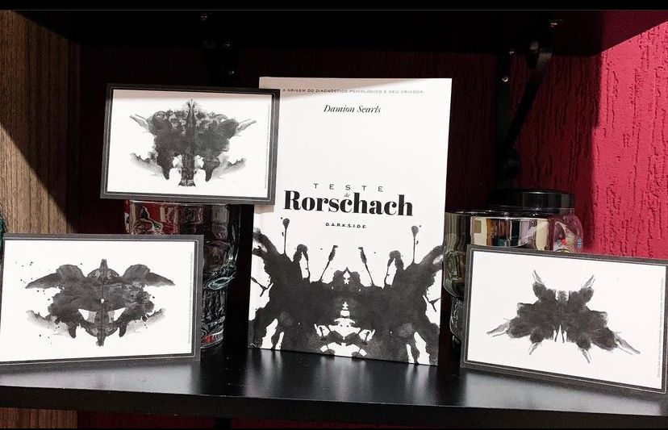

Teste de Rorschach: A Origem
A partir de que momento manchas aparentemente aleatórias foram usadas para tentar entender a mente de uma pessoa pela primeira vez? Como o seu criador, Hermann Rorschach, chegou à ideia das manchas? Teriam elas aparecido em um insight? Elas são mesmo aleatórias? E como que se tornaram tão populares? Muitos podem pensar a princípio no personagem de Watchmen (criação de Alan Moore e Dave Gibbons que dos quadrinhos saltou para as telas do cinema e da TV), que carrega as manchas do teste na máscara. É comum ver o teste em ação em obras de entretenimento e de arte, ou até mesmo em propagandas e vitrines, mas poucos têm acesso às verdadeiras placas usadas para o procedimento e somente profissionais treinados da área da psicologia são capazes de aplicá-lo corretamente. No ano em que o teste de Rorschach (como esse procedimento é conhecido até hoje) completa 100 anos, e a DarkSide® Books traz a obra Teste De Rorschach: A Origem em sua linha Crime Scene, dedicado a livros de investigação criminal e de casos de criminosos notórios. Chegou a hora de uma ferramenta tão usada pela criminologia e tão reconhecida pela psicologia ser desvendada por nossos leitores. Damion Searls traça uma cuidadosa linha do tempo do teste, atravessada pela biografia de seu criador, Hermann Rorschach, pelos primeiros embates entre as grandes mentes da psicanálise, como Sigmund Freud e Carl Jung, com o ambiente da Europa no começo do século XX, de pano de fundo. Mesmo com todo o rigor científico no qual o teste está envolto, Teste De Rorschach: A Origem mostra o quanto existe de artístico e intuitivo tem em todo o processo de sua concepção, desenvolvimento e aprimoramento. Uma obra indicada para especialistas, para interessados em investigação e para todas as pessoas que querem entender mais profundamente os mecanismos ocultos de nossos pensamentos e reações. (Resenha oficial)
Você gosta de conhecer mais sobre a psicologia humana e sobre formas de investigação? Então, tenho uma dica maravilhosa - Teste de Rorschach: A Origem.
Na obra (que é super completa) vamos conhecer a história por trás desse curioso teste, a vida de Hermann Rorschach e muitas curiosidades.
O que você vê?